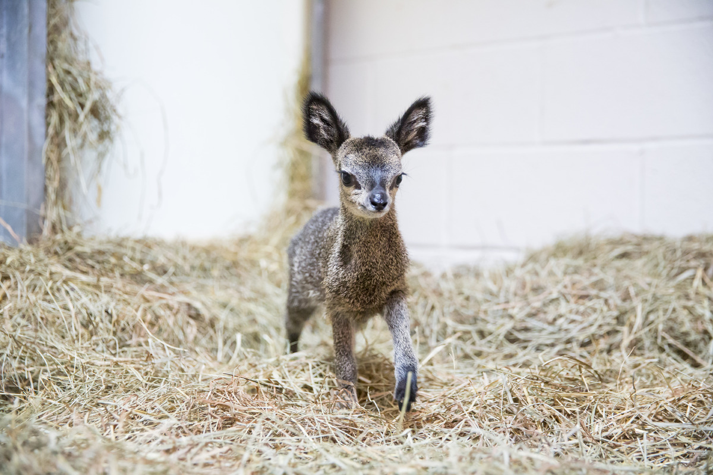
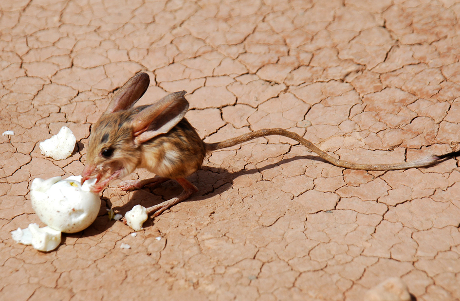
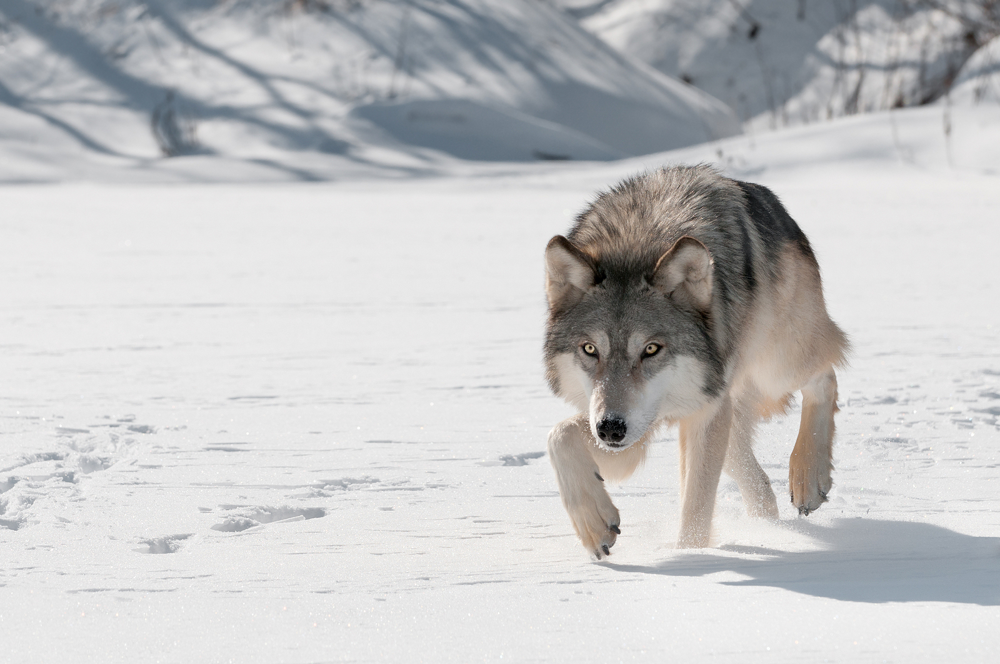
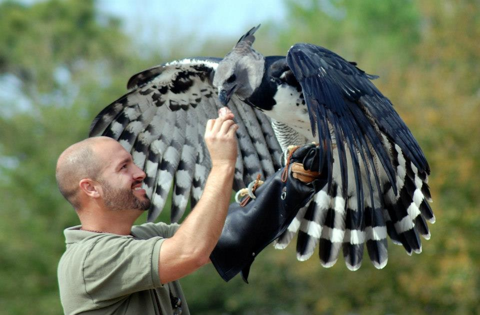
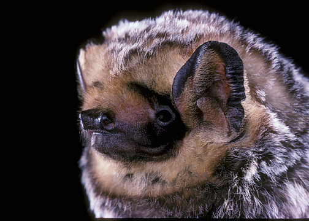
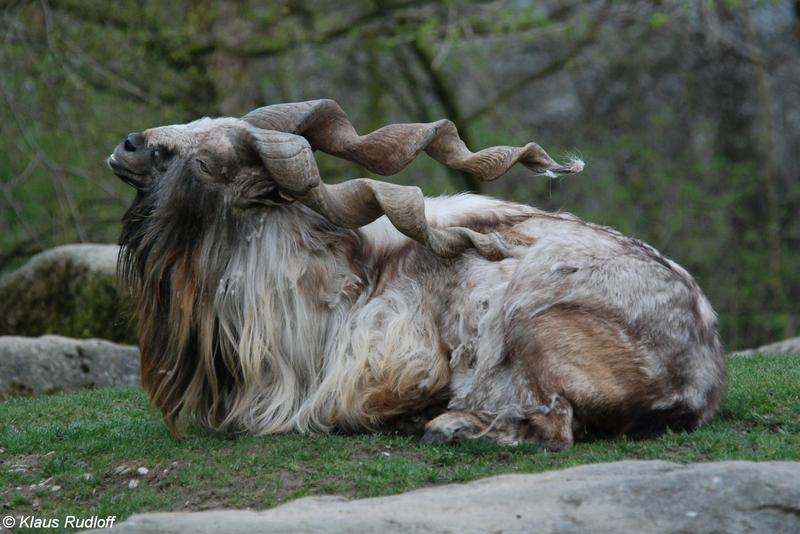
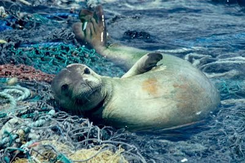
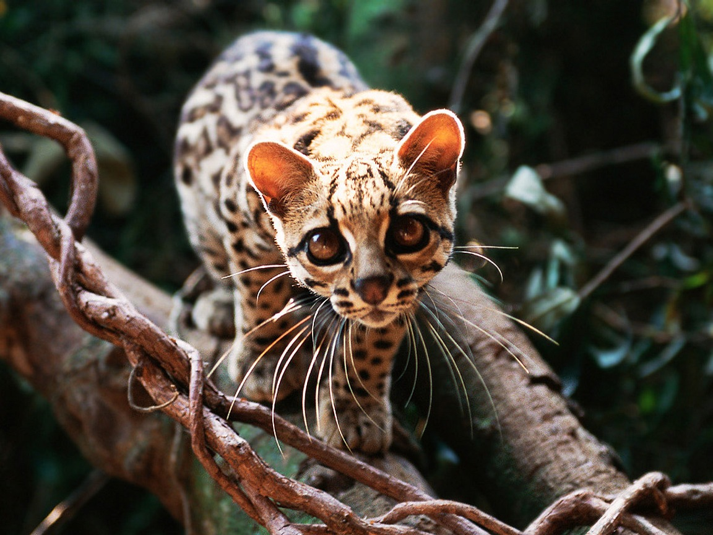
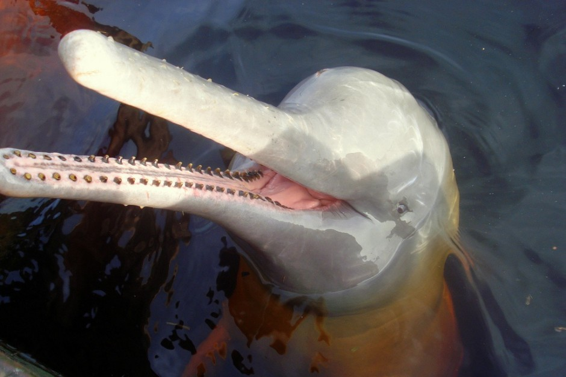

ENDANGERED SPECIES


The Zanzibar suni a subspecies of the suni, an antelope species found on the island of Zanzibar in Africa. It is a very small antelope and is also sometimes called the dwarf antelope. Adults only reach between 13 and 15 inches high at the shoulder and weigh only 10 to 12 lbs. They are reddish brown in color with a darker back, sides and legs. The belly and chin are white, and there are black rings that appear around the eyes and the hooves. They also have white spots on their coats which provide camouflage against predators. Males have horns that grow between three and five inches long. Females do not have horns.







